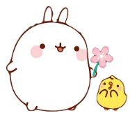

Molang is an irresistibly adorable, chubby bunny with a soft, rounded appearance and a big heart. Originating from a South Korean artist, Molang has become a beloved character worldwide. This little bunny loves spreading joy and positivity through simple, everyday adventures with his best friend, Piu Piu, a tiny, yellow chick. Whether it’s gardening, cooking, or exploring new places, Molang’s cheerful nature and playful curiosity turn ordinary moments into delightful, heartwarming stories. With a pastel color palette and charming illustrations, Molang embodies a whimsical world where friendship, kindness, and happiness take center stage. The character has found its way into various merchandise, animated series, and social media, capturing the hearts of fans of all ages.
